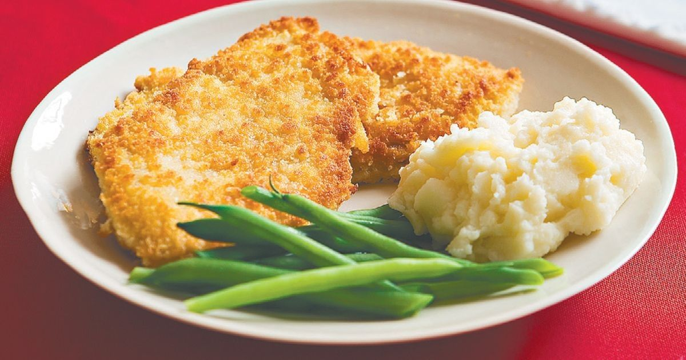

Chicken Schnitzel
Chicken Schnitzel
Ingredients
- 2 cups fresh breadcrumbs
- 1/3 cup finely grated parmesan cheese
- 1 tbsp finely grated lemon rind
- 2 tbsp finely chopped fresh flat-leaf parsley leaves
- 1 tsp garlic powder
- 1/2 cup White Plain Flour
- 1 egg
- 1 tbsp Full Cream Milk
- 550g chicken breast schnitzel (uncrumbed)
- Vegetable oil, for shallow-frying
Method
- Combine breadcrumbs, parmesan, lemon rind, parsley, and garlic powder on a plate. Season with salt and pepper. Place flour on a plate. Whisk egg and milk together in a shallow bowl.
- Coat 1 piece of chicken in flour, shaking off excess. Dip in egg mixture. Coat in breadcrumb mixture. Place on a plate. Repeat with remaining chicken, flour, egg mixture, and breadcrumb mixture.
- Heat oil in a frying pan over medium-high heat. Cook chicken, in batches, for 4 to 5 minutes each side or until golden and cooked through. Transfer to a plate lined with paper towel to drain. Serve.